공유압기능사 (2006-10-01 기출문제)
1과목: 임의구분
1. 다음 그림은 무슨 유압ㆍ공기압 도면기호인가?
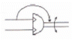
- 요동형 공기압 액추에이터
- 요동형 유압 액추에이터
- 유압 모터
- 공기압 모터
(정답률: 84%)

2. 다음 그림에서 단면적이 5[cm2] 피스톤에 20[kg]의 추를 올려놓을 때 유체에 발생하는 압력의 크기는?
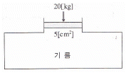
- 1[kg/cm2]
- 4[kg/cm2]
- 5[kg/cm2]
- 20[kg/cm2]
(정답률: 93%)
3. 다음 기호의 설명으로 맞는 것은?
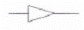
- 관로 속에 기름이 흐른다.
- 관로 속에 공기가 흐른다.
- 관로 속에 물이 흐른다.
- 관로 속에 윤활유가 흐른다.
(정답률: 88%)
4. 다음 유압 기호의 제어 방식 설명으로 올바른 것은?
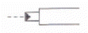
- 레버 방식이다.
- 스프링 제어 방식이다.
- 공기압 제어 방식이다.
- 파일럿 제어 방식이다.
(정답률: 69%)
5. 유관의 안지름을 5[cm], 유속을 10[cm/s]로 하면 최대 유량은 약 몇 [cm3/s]인가?
- 196
- 250
- 462
- 785
(정답률: 63%)
6. 입력 측과 출력 측의 작용 면적비에 대응하는 증압비에 따라 압력을 변환하는 기기는?
- 측압기
- 차동기
- 여과기
- 증압기
(정답률: 82%)
7. 유압 모터의 종류가 아닌 것은?
- 기어형
- 베인형
- 피스톤형
- 나사형
(정답률: 60%)
8. 다음 중 고압 작동에 적합한 특징을 갖는 모터는?
- 피스톤 모터
- 기어 모터
- 압력 평형식 베인 모터
- 압력 불평형식 베인 모터
(정답률: 59%)
9. 다음 중 공기압 장치의 기본 시스템이 아닌 것은?
- 압축공기 발생장치
- 압축공기 조정장치
- 공압제어 밸브
- 유압 펌프
(정답률: 89%)
10. 양정은 압력을 비중량으로 나눈 값이다. 양정의 단위로 적당한 것은?
- [kg]
- [m]
- [kg/cm2]
- [m3/sec]
(정답률: 58%)
11. 완전한 진공을 “0”으로 표시한 압력은?
- 게이지 압력
- 최고 압력
- 평균압력
- 절대압력
(정답률: 75%)
12. 유압동력을 직선왕복 운동으로 변환하는 기구는?
- 유압 모터
- 요동 모터
- 유압 실린더
- 유압 펌프
(정답률: 84%)
13. 유압 펌프 중에서 가변 체적형의 제작이 용이한 펌프는?
- 내접형 기어 펌프
- 외접형 기어 펌프
- 평형형 베인 펌프
- 축방향 회전피스톤 펌프
(정답률: 61%)
14. 유압유의 점성이 지나치게 큰 경우 나타나는 현상이 아닌 것은?
- 유동의 저항이 지나치게 많아진다.
- 마찰에 의한 열이 발생한다.
- 부품 사이의 누출 손실이 커진다.
- 마찰 손실에 의한 펌프의 동력이 많이 소비된다.
(정답률: 66%)
15. 작동유의 열화가 촉진하는 원인이 될 수 없는 것은?
- 유온이 너무 높음
- 기포의 혼입
- 플러깅 불량에 의한 열화된 기름의 잔존
- 점도가 부적당
(정답률: 59%)
16. 다음 그림에서 공압로직 밸브와 진리값에 일치하는 로직 명칭은?
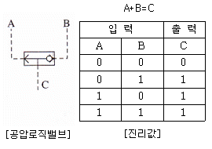
- AND
- OR
- NOT
- NOR
(정답률: 85%)
17. 유압장치에서 방향제어 밸브의 일종으로서 출구가 고압측 입구에 자동적으로 접속되는 동시에 저압측 입구를 닫는 용을 하는 밸브는?(오류 신고가 접수된 문제입니다. 반드시 정답과 해설을 확인하시기 바랍니다.)
- 셀렉터 밸브
- 셔틀 밸브
- 바이패스 밸브
- 체크 밸브
(정답률: 64%)
18. 다음 밸브 기호는 어떤 밸브의 기호인가?
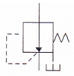
- 무부하 밸브
- 감압 밸브
- 시퀀스 밸브
- 릴리프 밸브
(정답률: 71%)
19. 공기 탱크의 기능을 나열한 것 중 틀린 것은?
- 압축기로부터 배출된 공기 압력의 맥동을 평준화 한다.
- 다량의 공기가 소비되는 경우 급격한 압력 강하를 방지한다.
- 공기 탱크는 저압에 사용되므로 법적 규제를 받지 않는다.
- 주위의 외기에 의해 냉각되어 응축수를 분리시킨다.
(정답률: 78%)
20. 다음 유압ㆍ공기압 도면기호는 무엇을 나타낸 것인가?
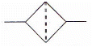
- 어큐뮬레이터
- 필터
- 윤활기
- 유량계
(정답률: 76%)
2과목: 임의구분
21. 회로압이 설정압을 넘으면 막이 파열되어 압유를 탱크로 귀환시켜 압력 상승을 막아 기기를 보호하는 역할을 하는 것은?
- 방향제어 밸브
- 유체 퓨즈
- 파일럿 작동형 체크 밸브
- 감압 밸브
(정답률: 78%)
22. 다음 플립플롭 기능을 만족하는 밸브는?
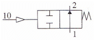
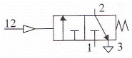
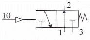
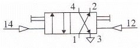
(정답률: 66%)
23. 공압 실린더에서 쿠션조절의 의미는?
- 실린더의 속도를 빠르게 한다.
- 실린더의 힘을 조절한다.
- 전체 운동 속도를 조절한다.
- 운동의 끝부분에서 완충한다.
(정답률: 79%)
24. 실린더 중 단동 실린더가 될 수 없는 것은?
- 피스톤 실린더
- 격판 실린더
- 램형 실린더
- 양 로드형 실린더
(정답률: 79%)
25. 유압펌프에 관한 설명이다. 이들의 설명이 잘못된 것은?
- 나사 펌프 : 운전이 동적이고 내구성이 작다.
- 치차 펌프 : 구조가 간단하고 소형이다.
- 베인 펌프 : 장시간 사용하여도 성능저하가 적다.
- 피스톤 펌프 : 고압에 적당하고 누설이 적다.
(정답률: 50%)
26. 유압ㆍ공기압 도면기호(KS B 0⑤4)의 기호 요소에서 기호로 사용되는 선의 종류 중 복선의 용도는?
- 주관로
- 파일럿 조작관로
- 기계적 결함
- 포위선
(정답률: 47%)
27. 주로 안전 밸브로 사용되며 시스템 내의 압력이 최대 허용압력을 초과하는 것을 방지해주는 밸브로 가장 적합한 것은?
- 언로드 밸브
- 시퀀스 밸브
- 릴리프 밸브
- 압력 스위치
(정답률: 83%)
28. 탠덤 실린더를 사용하여 실린더의 램을 전진시켜 높지 않은 압력으로 강력한 압축력을 얻을 수 있는 회로는?
- 시퀀스 회로
- 무부하 회로
- 증강 회로
- 블리드 오프 회로
(정답률: 68%)
29. 다음에 설명되는 요소의 도면기호는 어느 것인가?
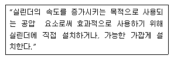
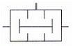
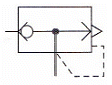
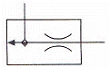
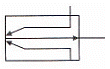
(정답률: 65%)
30. 압력보상형 유량제어 밸브에 대한 설명이다. 맞는 것은?
- 실린더 등의 운동속도와 힘을 동시에 제어할 수 있는 밸브이다.
- 밸브 입구와 출구의 압력 차를 일정하게 유지하는 밸브이다.
- 체크 밸브와 교축 밸브로 구성되어 일방향으로 유량을 제어한다.
- 유압 실린더 등의 이송속도를 부하에 관계없이 일정하게 할 수 있다.
(정답률: 48%)
31. 빌딩, 아파트 물탱크(수조)의 수위를 검출하여 급수 펌프를 자동으로 운전하도록 하는 것은?
- 전자개폐기
- 플로트리스계전기
- 근접스위치
- 한계스위치
(정답률: 66%)
32. 전원이 V결선된 경우 부하에 전달되는 전력은 △결선인 경우의 약 몇 [%]인가?
- 57.7
- 86.6
- 100
- 147
(정답률: 65%)
33. 변압기를 병렬 운전하기 위한 조건이 아닌 것은?
- 각 변압기의 중량이 같아야 한다.
- 각 변압기의 극성이 같아야 한다.
- 각 변압기의 권수비가 같아야 한다.
- 각 변압기의 백분율 임피던스 강하가 같아야 한다.
(정답률: 55%)
34. 10[Ω]과 20[Ω]의 저항이 직렬로 연결된 회로에 60[V]의 전압을 가했을 때 10[Ω]의 저항에 걸리는 전압을 구하면 얼마인가?
- 6[V]
- 10[V]
- 20[V]
- 30[V]
(정답률: 65%)
35. 대칭 3상 교류에서 각 상의 위상차는?
- 60°
- 90°
- 120°
- 150°
(정답률: 82%)
36. 교류 전압의 크기와 위상을 측정할 때 사용되는 계기는?
- 교류 전압계
- 전자 전압계
- 교류 전위차계
- 회로 시험기
(정답률: 72%)
37. 시퀀스 제어계의 일반적인 동작 과정을 나타낸 것이다. A, B, C, D에 맞는 용어를 순서대로 나열한 것은?
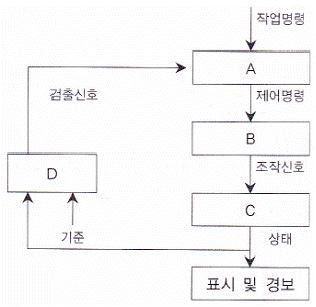
- A : 명령 처리부, B : 제어 대상, C : 조작부, D : 검출부
- A : 제어 대상, B : 검출부, C : 명령처리부, D : 조작부
- A : 검출부, B : 명령 처리부, C : 조작부, D : 제어 대상
- A : 명령 처리부, B : 조작부, C : 제어 대상, D : 검출부
(정답률: 60%)
38. 평등 자장 내에 전류가 흐르는 직선 도선을 놓을 때, 전자력이 최대가 되는 도선과 자장 방향의 각도는?
- 0°
- 30°
- 60°
- 90°
(정답률: 77%)
39. 금속 및 전해질 용액과 같이 전기가 잘 흐르는 물질을 무엇이라 하는가?
- 도체
- 반도체
- 절연체
- 저항
(정답률: 88%)
40. 권수가 300인 코일에서 2초 사이에 10[Wb]의 자속이 변화한다면, 코일에 발생되는 유도 기전력의 크기는 몇[V]인가?
- 20
- 1,500
- 3,000
- 6,000
(정답률: 52%)
3과목: 임의구분
41. 3상 농형 유도전동기의 기동법이 아닌 것은?
- 전전압 기동방법
- Y-△ 기동방법
- 기동 보상기 방법
- Y-Y 기동방법
(정답률: 58%)
42. 100[Ω]의 부하가 연결된 회로에 10[V]의 직류전압을 가하고 전류를 측정하면 계기에 나타나는 값은?
- 10[A]
- 1[A]
- 0.1[A]
- 0.01[A]
(정답률: 68%)
43. 자기 저항의 단위는?
- [Ω]
- [H/m]
- [AT/Wb]
- [Nㆍm]
(정답률: 53%)
44. OR논리 시퀀스제어 회로의 입력스위치나 접점의 연결은?
- 직렬
- 병렬
- 직ㆍ병렬
- Y
(정답률: 69%)
45. 1차 전압 110[V]와 2차 전압 220[V]인 변압기의 권선비는?
- 1 : 1
- 1 : 2
- 1 : 3
- 1 : 4
(정답률: 86%)
46. 공유압 배관의 간략 도시방법으로 신축과 이음의 도시 기호는?
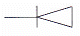
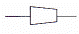
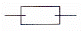
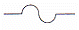
(정답률: 71%)
47. 다음과 같은 용접도시기호의 설명으로 올바른 것은?
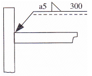
- 홈 깊이 5[mm]
- 목 길이 5[mm]
- 목 두께 5[mm]
- 루트 간격 5[mm]
(정답률: 59%)
48. 절단된 면을 다른 부분과 구분하기 위하여 가는 실선으로 규칙적으로 빗줄을 그은 선의 명칭은?
- 해칭선
- 피치선
- 파단선
- 기준선
(정답률: 64%)
49. 다음과 같은 물체의 한쪽 단면도로 가장 적합한 것은?
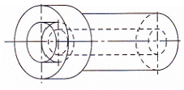
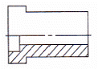
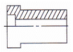
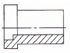
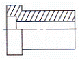
(정답률: 52%)
50. 기계제도 치수기입법에서 정정치수를 의미하는 것은?
50- 50
- (50)
- ＜＜50＞＞
(정답률: 73%)
51. 다음 입체도의 화살표 방향이 정면이고 좌우 대칭일 때 우측면도로 가장 적합한 것은?
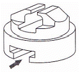
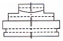
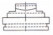
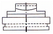
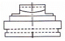
(정답률: 53%)
52. 제3각법으로 정투상한 보기와 같은 정면도와 평면도에 가장 적합한 우측면도는?
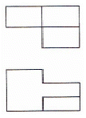
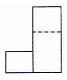
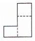
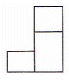
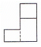
(정답률: 41%)
53. 파이프와 같이 두께가 얇은 곳의 결합에 이용되며, 누수를 방지하고 기밀유지하는 데 가장 적합한 나사는?
- 미터나사
- 톱니나사
- 유니파이나사
- 관용나사
(정답률: 53%)
54. 물체에 외력(하중)이 가해졌을 때 단위 면적당 작용하는 힘을 무엇이라 정의하는가?
- 변형률
- 응력
- 탄성계수
- 탄성에너지
(정답률: 81%)
55. 코일스프링의 평균 지름이 20[mm], 소선의 지름이 2[mm]면 스프링 지수는?
- 40
- 0.1
- 18
- 10
(정답률: 68%)
56. 환봉에 압축하중을 가했을 때 최대 전단응력은 최대압축 응력의 몇 배인가?
- 1/3
- 1/2
- 2
- 3
(정답률: 49%)
57. 평벨트 풀리에서 벨트와 직접 접촉하여 동력을 전달하는 부분은?
- 보스
- 암
- 림
- 리브
(정답률: 53%)
58. 축 단면계수를 Z, 최대 굽힘응력을 σb라 하면 축에 작용하는 굽힘 모멘트 M은?
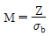
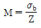
- M=σbZ
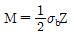
(정답률: 44%)
59. 피치원 지름 165[mm], 잇수 55인 표준평기어의 모듈은?
- 2.89
- 30
- 3
- 2.54
(정답률: 69%)
60. 두 축이 평행하지도 않고 만나지도 않으며 큰 감속을 얻고자 할 때 사용하는 기어는?
- 스퍼 기어
- 베벨 기어
- 웜 기어
- 헬리컬 기어
(정답률: 54%)